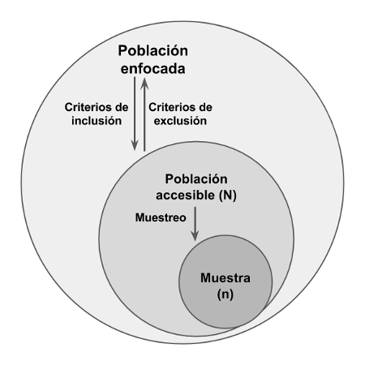
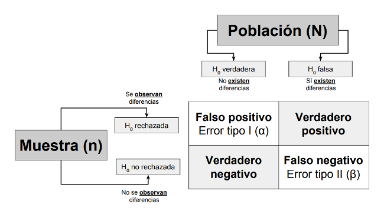
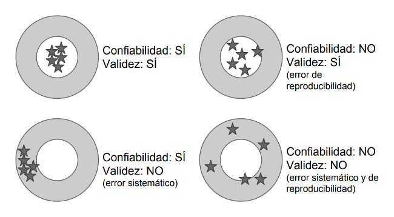
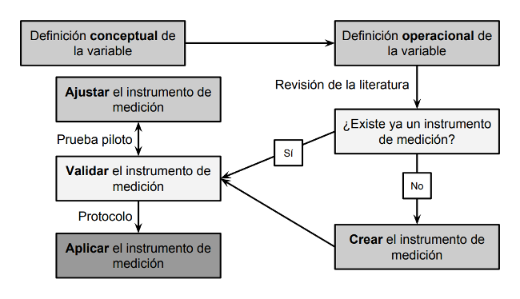
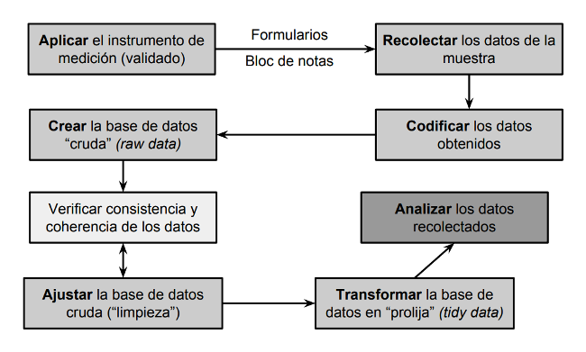
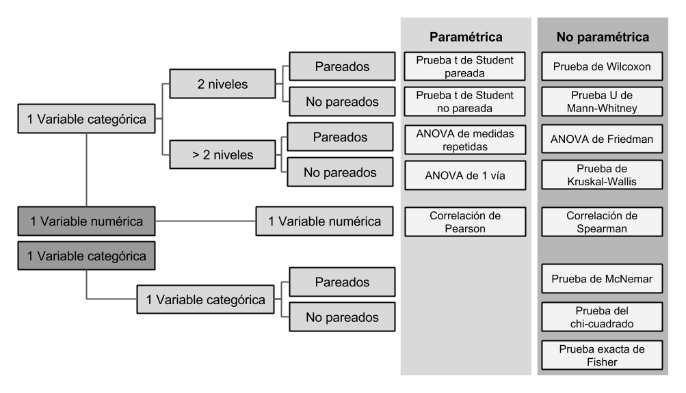
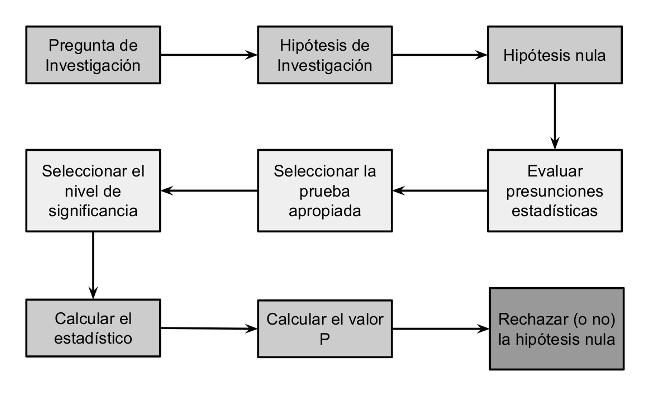

8 Material y método: Diseño cuantitativo
8.1 Estructura
- Diseño del estudio
- Medición de variables
- Planteamiento de hipótesis
- Selección de la muestra/muestreo
- Recolección de datos
- Análisis de datos
- Aspectos éticos
8.2 Diseño
- Estudio observacional
- Longitudinal/transversal
- Prospectivo/retrospectivo
- Casos-controles
- Estudio experimental
- Experimento
- Pre-experimento
- Quasi-experimento
8.3 Medición de variables
- Tipos de variables
- Numérica: discreta, contínua
- Categórica: nominal, ordinal, dicotómica
- Definición conceptual y operacional
8.4 Planteamiento de hipótesis
- Asociación entre 2 o más variables
- Tipos:
- Hipótesis de investigación*
- Hipótesis nula
- Hipótesis alternativas*
8.5 Selección de la muestra

8.5.1 Muestreo
- Muestreo probabilístico
- Aleatorio
- Estratificado
- Por cúmulos (conglomerados)
- Muestreo no probabilístico
- Series de casos
- Reportes de casos
8.5.2 Muestreo probabilístico
- Procedimiento para garantizar representatividad:
- Determinar el menor número de unidades muestrales
- Seleccionar aleatoriamente el menor número de elementos muestrales
- Selección por sorteo
- Selección por números aleatorios
- Selección sistemática (\(k = N/n\))
- Determinantes
- Tamaño de la muestra
- Tamaño del efecto
- Nivel de significancia
- Poder estadístico
8.5.3 Tamaño de la muestra
- Mínimo número de unidades muestrales requerido para detectar un efecto determinado con un cierto nivel de confianza
- La estimación efectiva depende de la hipótesis de investigación
- Estudios observacionales: \(\geq 30\) sujetos
- Estudios experimentales: \(\geq 15\) por grupo
8.5.4 Tamaño del efecto
- Medida de la fuerza de un fenómeno o intervención
- Magnitud estimada de una relación observada en la muestra
- No necesariamente indica una relación en la población
8.5.5 Errores de tipo I y tipo II

8.5.6 Nivel de significancia
- Probabilidad de cometer un error de tipo I (falso positivo)
- Probabilidad de observar un efecto en la muestra cuando el efecto no existe en la población
- Habitualmente \(\alpha = 0.05\)
8.5.7 Poder estadístico
- Probabilidad de NO cometer un error de tipo II (falso negativo) \(= 1 - \beta\)
- Probabilidad de observar un efecto en la muestra cuando el efecto existe en la población
- Habitualmente \((1 - \beta) = 0.80\)
8.6 Recolección de datos
- Seleccionar adecuadamente el instrumento de medición
- Confiabilidad
- Validez (contenido, criterio, constructo)
- Objetividad
- Describir el procedimiento de recolección de datos
- Minimizar los errores de medición (operador, contexto, instrumento)
8.6.1 Validez y confiabilidad

8.6.2 Selección del instrumento de medición

8.6.3 Proceso de recolección de datos

8.7 Análisis de datos
- Estadística descriptiva
- Descripción de las características de las variables por separado
- Estadística inferencial
- Pretende inferir parámetros (poblacionales) a partir de estadísticos (muestrales)
- Evaluación de la relación entre \(\geq 2\) variables
- Implica el contraste (evaluación) de hipótesis
8.7.1 Estadística descriptiva
- Frecuencia: absoluta, relativa
- Tendencia central: media aritmética (promedio), mediana, moda
- Medidas de dispersión: desviación estándar, varianza, rango estadístico, rango intercuartilo, cuantiles
- Medidas de forma: asimetría, curtosis (apuntamiento)
8.7.2 Estadística inferencial
- Valor P
- Probabilidad de observar los estadísticos obtenidos asumiendo que la hipótesis nula es verdadera
- Convencionalmente se establece que \(P < 0.05\) es “estadísticamente significativo”
- No implica significancia o importancia factual
- No confunfir con el error tipo I (\(\alpha\))
- Intervalo de confianza
- Rango que estima la probabilidad con que un valor se encuentre dentro del intervalo definido
- La estimación de éxito se representa con \(1 - \alpha\) y se denomina nivel de confianza (habitualmente 95%)
8.7.3 Selección de pruebas estadísticas
- Número de variables
- Tipo de variables
- Características de las variables
- Estadísticos requeridos
- Tipos:
- Paramétricas
- No paramétricas
8.7.4 Pruebas paramétricas vs no paramétricas
- Presunciones estadísticas
- Muestreo aleatorio
- Unidades muestrales independientes
- Distribución normal
- Varianzas homogéneas
- Pruebas paramétricas
- Los estadísticos son más precisos
- Poseen mayor poder estadístico pero son menos robustas
8.7.5 Pruebas de asociación

8.7.6 Análisis de sobrevida
- Análisis de la duración esperada de tiempo hasta la aparición de uno o más eventos (análisis tiempo-evento)
- Implica la estimación de la función de sobrevida: \(S(t) = P(T > t) = \int_{t}^{\infty} f(u)du = 1 - F(t)\)
- Estimador de Kaplan-Meier: \(S(t) = \prod_{i: t_i \leq t} (1 - \frac{d_1}{n_i})\)
- Prueba de Mantel-Cox: \(Z = \frac{\sum_{j+1}^{J}(O_{1j} - E_{1j})} {\sqrt{\sum_{j=1}^{J}V_j}}\)
8.7.7 Modelos de regresión
- Útiles para predecir valores o eventos
- Evalúan el impacto de las variables predictoras (independientes) en las variables desenlance (dependientes)
- Mal denominados “análisis multivariado”
- Principales modelos:
- Lineal: \(Y_i = \beta_0 + \beta_1X_1 + \dots + \beta_px_p + \epsilon\)
- Logística: \(\text{logit}(p_i) = \text{ln}(\frac{p_i}{1 - p_i}) = \beta_0 + \beta_1x_{1,i} + \dots + \beta_kx_{k,i}\)
- Riesgos proporcionales: \(\lambda(t|x_i) = \lambda_0(t) + \beta_1x_{1,i} + \dots + \beta_kx_{k,i}\)
8.7.8 Proceso de análisis de datos cuantitativos
